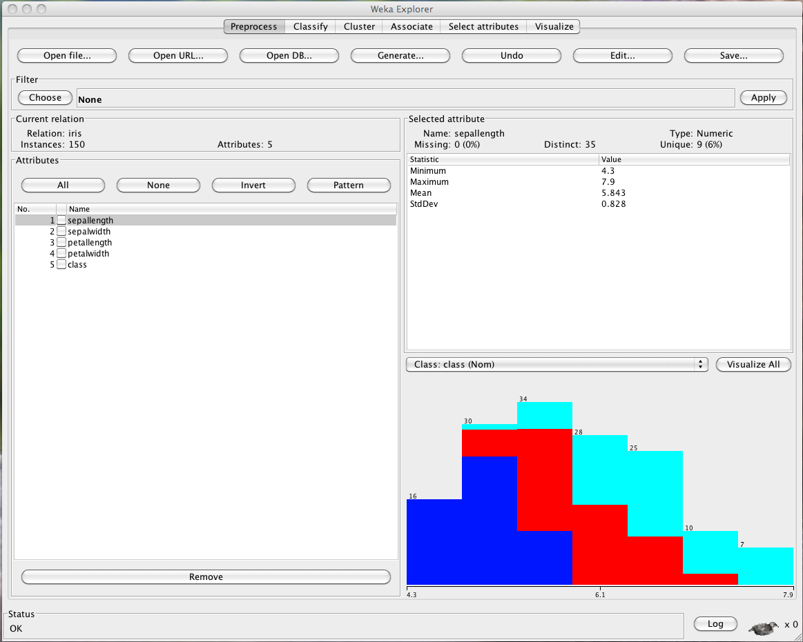
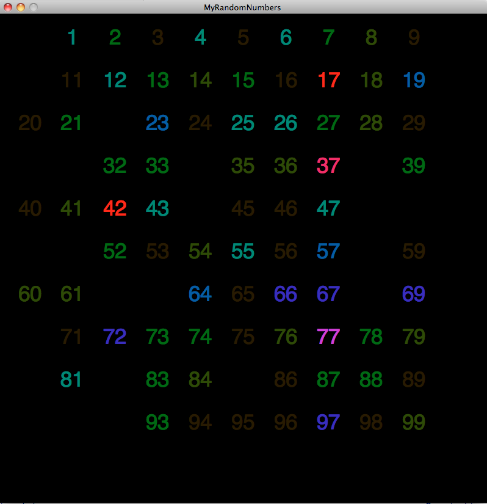

Data is a collection attributes. These attributes can be of anything. The rest of this webpage will give a description on how this data can be organized to provode a strong input for a data mining project.
A Dataset is a collection of data all with the same attributes. Most Datasets contain metadata (which is data/statistics about the data itself) as well as a description on how the Dataset is broken down. Due to the fact that datasets are the true building block to Data Mining, it is important to really concentrate on the various attributes that will make the Dataset very complete and organized.
Quality is said to be the Elephant in the room for Data Mining. The quality of the data is what really determines the analysis/correlations that will be found. For a dataset to have good quality, it needs to be a large dataset, many attributes, very low number of missing data values, and most importantly accurate. The quality of the data is most determined at the collection process. Incorrect data may be a result of: human error, human apathy, miscalculation and miscommunication. With all of these factors to watch out for it becomes almost impossible for data to have perfect quality. This causes the Data Mining scientist to be responsible for evaluating and sometime patching up the dataset before analysis.
Exploring the dataset can sometimes show most of the correlations between different attributes. It is very important to explore the dataset before diving into different algorithms because basic statistics can sometimes provide new aspects of looking at the data. Data Mining is finding correlations between different attributes in a dataset. With the exploration of data, these patters might provide a head start before the mining actually begins. The example below shows one of many tools that are used to handle data. The WEKA program shows statistics very quickly about the Iris Dataset (one of the most common datasets in data mining). It becomes obvious how the use of this information might be useful when comparing different pants to iris plants.
According to Edward Tufte people absorb incredible amounts of data just by sight. They automatically recognize patterns that would be hard to convey with numbers on a piece of paper. Data visualization is incredibly important part of Data Mining. Conveying the information to the audience is just as important as finding the pattern. If the audience does not understand the conclusions of your findings then the whole work becomes irrelevant. In an example, 250 people were told to pic a random number. If we would see the value on a piece of paper, we would have a hard time picking out different patterns. Nevertheless with simple visualization techniques, a massive amount of data can be conveyed really quickly. It becomes obvious that when picking random numbers, most of the population thinks that certain numbers are more "random" than others.
